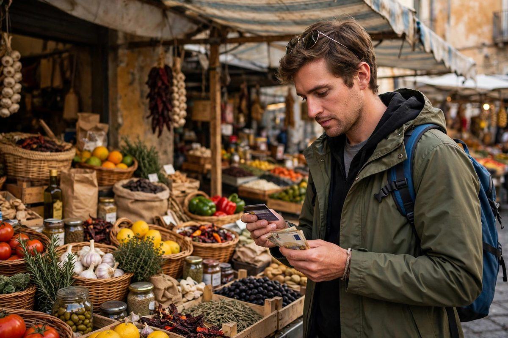

Cash vs Card Abroad: Which Is Cheaper and When?

The case for cards
Cards win on cost for most spending abroad. A fee-free debit or credit card converts at close to the mid-market rate, with no spread beyond a fraction of a percent, and it leaves a record of every payment that makes budgeting and disputes easy. Cards are also safer than carrying large amounts of cash, since a lost card can be frozen in seconds while lost cash is gone forever. In countries where cards are widely accepted, which is now most of Europe, North America, and East Asia, a card can cover almost everything.
Cards also protect you as a consumer. Credit card purchases often come with protection against fraud and against a supplier that fails to deliver, which cash cannot offer. Contactless payment is faster than counting notes, and it avoids the problem of receiving unfamiliar coins and notes as change. For hotels, car hire, and flights, a card is often required anyway, since providers need a deposit or a guarantee.
The case for cash
Cash still wins in specific situations. Small restaurants, street markets, rural shops, and taxis in many countries accept only cash, and some offer a discount for it. Cash is also useful when card systems fail, during a power cut, or in a country where card acceptance is low. Tipping is easier with cash, and small purchases are often quicker with notes than with a card terminal that needs a connection.
Cash has a budgeting advantage too: a fixed amount in your wallet is a visible limit, while a card can feel limitless until the statement arrives. Many travellers use cash for daily spending and a card for larger purchases, which combines the control of cash with the safety and record-keeping of cards. The key is to carry enough cash for a day or two, not for the whole trip.
The cheapest mix
For most trips, the cheapest mix is a fee-free card for hotels, restaurants, and shops, plus cash withdrawn from an ATM for markets, taxis, and tips. Withdraw larger amounts less often to reduce fixed ATM fees, and avoid exchanging cash at bureaus, where the spread is wide. Always pay in the local currency with a card, and decline dynamic currency conversion, which is the single most expensive mistake travellers make with cards.
Before travelling, check whether your cards charge a foreign transaction fee, and consider a fee-free travel card if they do. Carry a backup card from a different network, and keep emergency cash separate from your daily money. With this mix, you get the low cost of cards, the flexibility of cash, and the safety of not carrying everything in one place.
Putting It Into Practice
For your next trip, try the mix in this guide for a week: a fee-free card for hotels, restaurants and shops, and cash from an ATM for markets, taxis and tips, paying in the local currency every time. At the end of the trip, add up the fees and compare them with what a bureau or a bank exchange would have cost. Most travellers find the card-and-ATM mix saves a noticeable amount, and once you have seen the numbers, the habit sticks for every trip after.
Frequently Asked Questions
Is it cheaper to use cash or card abroad?
Usually a fee-free card, which converts near the mid-market rate. Cash from an ATM is next best; bureaus are most expensive.
How much cash should I carry abroad?
Enough for a day or two of small expenses, plus an emergency reserve. Use a card for most spending.
Do I need cash in Europe?
Very little. Cards are accepted almost everywhere, though small markets and rural businesses may still prefer cash.